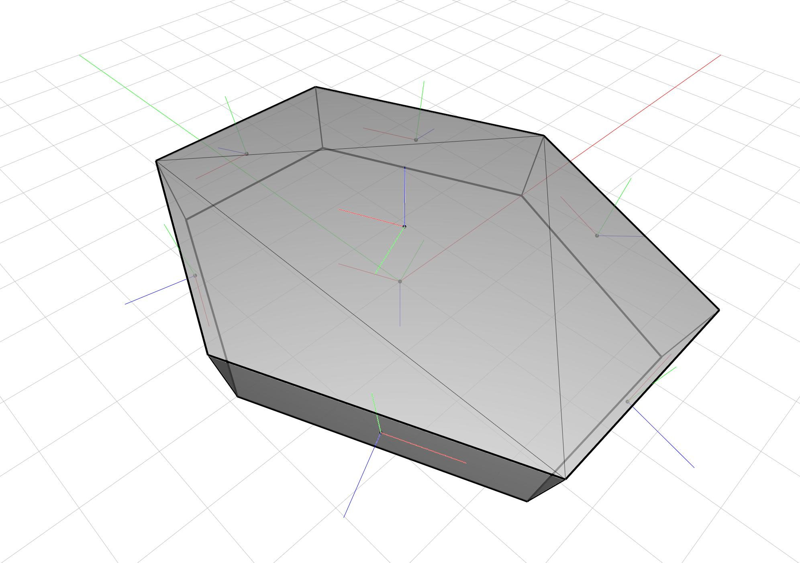
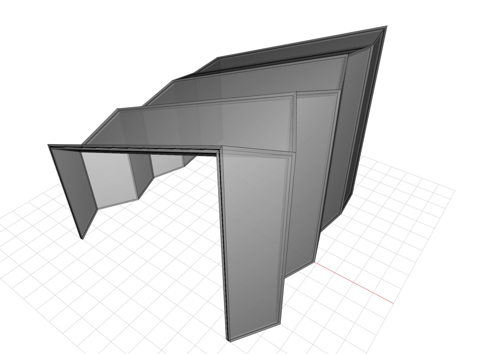

Elements: Plate
A plate is a data structure that represents a pair of polygons.
The frames are oriented outwards. The first polygon is considered to be the base.

from compas.geometry import Polygon, Translation, Frame, Transformation
from compas_model.elements import Plate
from compas_model.model import Model
from compas_model.viewer import ViewerModel
# --------------------------------------------------------------------------
# Create a plate from polygon and thickness.
# --------------------------------------------------------------------------
polygon0 = Polygon.from_sides_and_radius_xy(6, 5)
polygon0 = Polygon(points=[
[0, 0, 0],
[5, 0, 0],
[5, 5, 0],
[10, 5, 0],
[10, 15, 0],
[0, 10, 0],
])
# Uncomment to verify the plate is initialized correctly regardless of the polygon winding.
# polygon0.points.reverse()
plate = Plate(polygon=polygon0, thickness=1, compute_loft=False)
# --------------------------------------------------------------------------
# Create a plate from two polygons.
# --------------------------------------------------------------------------
plate = Plate.from_two_polygons(polygon0, polygon0.transformed(Translation.from_vector([0, 0.2, 0.2])))
# --------------------------------------------------------------------------
# Transform and copy the plate.
# --------------------------------------------------------------------------
xform = Transformation.from_frame_to_frame(
Frame.worldXY(), Frame([0, 0, 0], [1, 0, 0], [0, 1, 0.5])
)
plate.transform(xform)
plate = plate.copy()
# --------------------------------------------------------------------------
# Serialization
# --------------------------------------------------------------------------
plate.to_json("data/plate.json", pretty=True)
plate = Plate.from_json("data/plate.json")
# --------------------------------------------------------------------------
# Create model.
# --------------------------------------------------------------------------
model = Model()
model.add_element("my_plate", plate)
print("Beam plate belongs to the following ElementNode: ", plate.node)
# --------------------------------------------------------------------------
# Vizualize model.
# --------------------------------------------------------------------------
ViewerModel.show(model, scale_factor=1)
A larger example showing an application of a folded plate system:

from compas.geometry import Point, Plane, Vector, Line, Polyline, Polygon
from compas.datastructures import Mesh
from compas.geometry import intersection_line_plane, intersection_plane_plane, intersection_line_line
from compas_model.elements import Plate
from compas_model.model import Model
from compas_model.viewer import ViewerModel
def reflex_fold_mesh(poly1, poly2):
planes = reflx_plns(poly1)
point3ds = list(poly2.points)
return mkmesh(point3ds, planes)
def reflx_plns(poly):
planes = []
normal = Vector(0, 0, 1)
for i, pt in enumerate(poly):
if i == 0 or i == len(poly) - 1:
normal = Vector(0, 0, 1)
else:
item = poly[i - 1] - pt
vector = poly[i + 1] - pt
item.unitize()
vector.unitize()
normal = (item + vector) * 0.5
normal.unitize()
planes.append(Plane(pt, normal))
return planes
def mkmesh(pvrts, planes):
mesh = Mesh()
mesh_faces = []
num = 0
point3ds1 = []
nums = []
for pvrt in pvrts:
nums.append(num)
num += 1
point3ds1.append(pvrt)
for i in range(1, len(planes)):
point3ds2 = []
nums1 = []
for item in pvrts:
origin = planes[i].point
plane = Plane(planes[i - 1].point, planes[i - 1].normal)
vector = origin - plane.point
point3d1 = vpi(item, vector, origin, planes[i].normal)
if point3d1:
point3ds2.append(point3d1)
nums1.append(num)
num += 1
point3ds1.append(point3d1)
for k in range(len(point3ds2) - 1):
mesh_faces.append([nums1[k], nums[k], nums[k + 1], nums1[k + 1]])
pvrts = point3ds2
nums = nums1
mesh = mesh.from_vertices_and_faces(point3ds1, mesh_faces)
mesh.weld(3)
mesh.unify_cycles()
return mesh
def vpi(p1, n1, p2, n2):
line = Line(Point(p1[0] + n1[0], p1[1] + n1[1], p1[2] + n1[2]), p1)
plane = Plane(p2, n2)
return line_plane_intersection(line, plane)
def line_plane_intersection(line, plane):
num = intersection_line_plane(line, plane)
return num
def bisector_line(plane0, plane1, tolerance=0.0001):
if abs(abs(plane0.normal.dot(plane1.normal)) - 1.0) < tolerance:
return None
pts = intersection_plane_plane(plane0, plane1)
if not pts:
return None
return Line(pts[0], pts[1])
def mesh_polylines(mesh, offset=0.5):
polygons = []
faces_planes = []
for face in mesh.faces():
plane = mesh.face_plane(face)
plane = Plane(plane.point+plane.normal*offset, plane.normal)
faces_planes.append(plane)
edges_faces = {}
bisectors = {}
for edge in mesh.edges():
faces = mesh.edge_faces(edge)
edges_faces[edge] = faces
line = None
if (faces[0] is not None and faces[1] is not None):
line = bisector_line(faces_planes[faces[0]], faces_planes[faces[1]])
else:
plane0 = faces_planes[faces[0]] if faces[0] is not None else faces_planes[faces[1]]
mid_point = mesh.edge_midpoint(edge)
plane1 = Plane(mid_point, Vector(0, 0, 1)) if mid_point.z < 0.01 else Plane(mid_point, Vector(0, 1, 0))
line = bisector_line(plane0, plane1)
if not line:
raise Exception("Faces are parallel")
bisectors[edge] = line
bisectors[(edge[1], edge[0])] = line
for face in mesh.faces():
face_edges = mesh.face_halfedges(face)
# interesect edges consequently
points = []
for i in range(len(face_edges)):
edge0 = face_edges[i]
edge1 = face_edges[(i + 1) % len(face_edges)]
# intersect edges
line0 = bisectors[edge0]
line1 = bisectors[edge1]
pt = intersection_line_line(line0, line1)[0]
if not pt:
raise Exception("Edges are parallel")
# add point to the list
if pt:
points.append(Point(*pt))
polygons.append(Polygon(points))
return polygons
# --------------------------------------------------------------------------
# Create a folded mesh.
# --------------------------------------------------------------------------
vertical_profile = Polyline([Point(-5, 6, 0), Point(-5, 6, 6), Point(5, 6, 10), Point(5, 6, 0)])
horizontal_profile = Polyline([Point(-5, 6, 0), Point(-5.25, 4, 0), Point(-5, 2, 0), Point(-5.75, 0, 0), Point(-5, -2, 0), Point(-6.25, -4, 0), Point(-5, -6, 0)])
mesh = reflex_fold_mesh(vertical_profile, horizontal_profile)
bottom_polygons = mesh_polylines(mesh, -0.1)
top_polygons = mesh_polylines(mesh, 0.1)
# --------------------------------------------------------------------------
# Create model.
# --------------------------------------------------------------------------
model = Model()
# --------------------------------------------------------------------------
# Create a plate two polygons.
# --------------------------------------------------------------------------
for idx, polygon in enumerate(bottom_polygons):
plate = Plate.from_two_polygons(
polygon0=polygon,
polygon1=top_polygons[idx],
)
model.add_element("my_plate"+str(idx), plate)
# --------------------------------------------------------------------------
# Vizualize model.
# --------------------------------------------------------------------------
ViewerModel.show(model, scale_factor=1, geometry=[])